Guilloche Capability 20260816
Parameter-space review of the expanded izzi guilloche vocabulary: nine categories, four per-axis series each consolidated into one 1x3 variation grid (symmetry, density, scale, phase).
Izzi generation commit: 8819cb72144c397a67ed28c6ad3c961655e0c276 · 36 passes
-
Sunburst — Symmetry variations
Radial straight-ray sunburst. Symmetry varies while density stays fixed. Combined as a 1x3 grid of three variations.
-
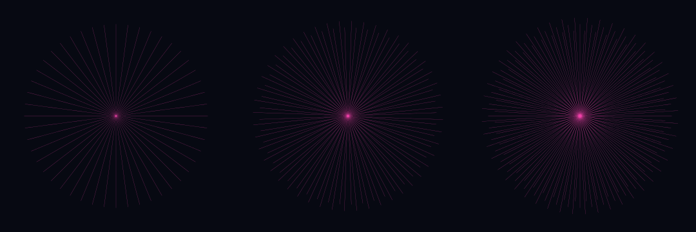
Sunburst — Density variations
Radial straight-ray sunburst. Density varies while symmetry stays fixed. Combined as a 1x3 grid of three variations.
-
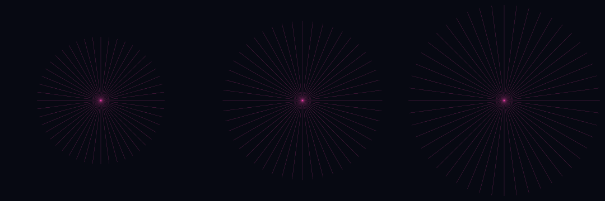
Sunburst — Scale variations
Radial straight-ray sunburst. Scale varies while phase stays fixed. Combined as a 1x3 grid of three variations.
-
Sunburst — Phase variations
Radial straight-ray sunburst. Phase varies while scale stays fixed. Combined as a 1x3 grid of three variations.
-
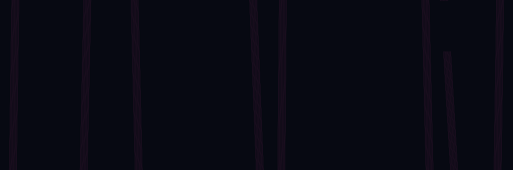
Harmonic band — Symmetry variations
Multi-harmonic engraved wave band. Symmetry varies while density stays fixed. Combined as a 1x3 grid of three variations.
-
Harmonic band — Density variations
Multi-harmonic engraved wave band. Density varies while symmetry stays fixed. Combined as a 1x3 grid of three variations.
-
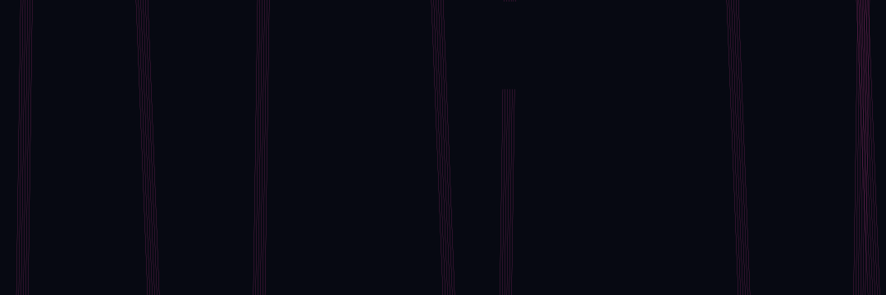
Harmonic band — Scale variations
Multi-harmonic engraved wave band. Scale varies while phase stays fixed. Combined as a 1x3 grid of three variations.
-
Harmonic band — Phase variations
Multi-harmonic engraved wave band. Phase varies while scale stays fixed. Combined as a 1x3 grid of three variations.
-
Fish scale — Symmetry variations
Overlapping ecailles de poisson lattice. Symmetry varies while density stays fixed. Combined as a 1x3 grid of three variations.
-
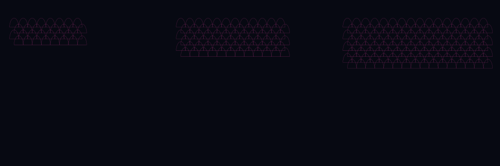
Fish scale — Density variations
Overlapping ecailles de poisson lattice. Density varies while symmetry stays fixed. Combined as a 1x3 grid of three variations.
-
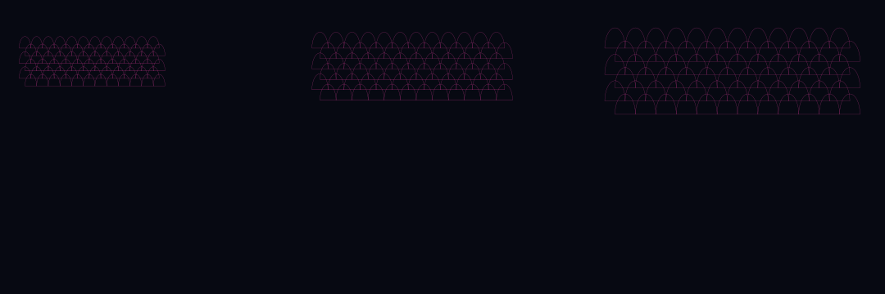
Fish scale — Scale variations
Overlapping ecailles de poisson lattice. Scale varies while phase stays fixed. Combined as a 1x3 grid of three variations.
-
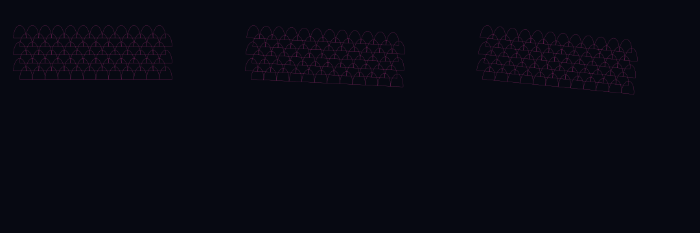
Fish scale — Phase variations
Overlapping ecailles de poisson lattice. Phase varies while scale stays fixed. Combined as a 1x3 grid of three variations.
-
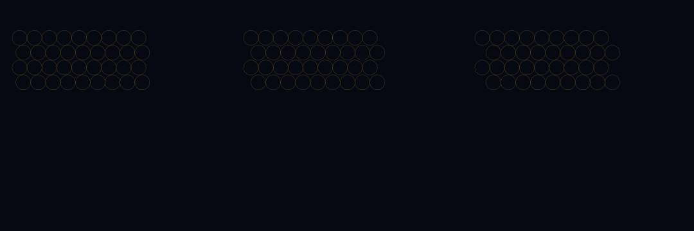
Barleycorn — Symmetry variations
Staggered grain d'orge field. Symmetry varies while density stays fixed. Combined as a 1x3 grid of three variations.
-
Barleycorn — Density variations
Staggered grain d'orge field. Density varies while symmetry stays fixed. Combined as a 1x3 grid of three variations.
-
Barleycorn — Scale variations
Staggered grain d'orge field. Scale varies while phase stays fixed. Combined as a 1x3 grid of three variations.
-
Barleycorn — Phase variations
Staggered grain d'orge field. Phase varies while scale stays fixed. Combined as a 1x3 grid of three variations.
-
Medallion — Symmetry variations
Framed radial medallion with nested inset. Symmetry varies while density stays fixed. Combined as a 1x3 grid of three variations.
-
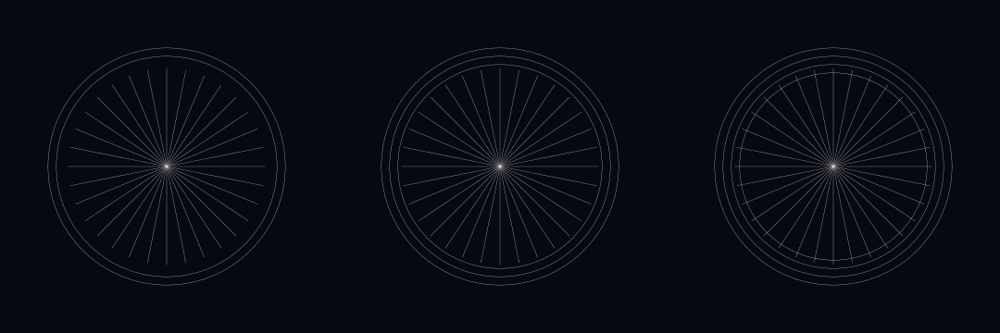
Medallion — Density variations
Framed radial medallion with nested inset. Density varies while symmetry stays fixed. Combined as a 1x3 grid of three variations.
-
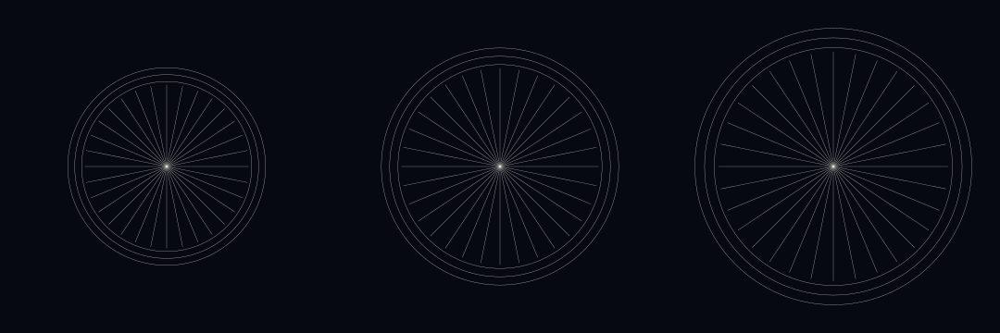
Medallion — Scale variations
Framed radial medallion with nested inset. Scale varies while phase stays fixed. Combined as a 1x3 grid of three variations.
-
Medallion — Phase variations
Framed radial medallion with nested inset. Phase varies while scale stays fixed. Combined as a 1x3 grid of three variations.
-

Vignette — Symmetry variations
Soft-edged framed vignette. Symmetry varies while density stays fixed. Combined as a 1x3 grid of three variations.
-
Vignette — Density variations
Soft-edged framed vignette. Density varies while symmetry stays fixed. Combined as a 1x3 grid of three variations.
-
Vignette — Scale variations
Soft-edged framed vignette. Scale varies while phase stays fixed. Combined as a 1x3 grid of three variations.
-
Vignette — Phase variations
Soft-edged framed vignette. Phase varies while scale stays fixed. Combined as a 1x3 grid of three variations.
-
Multicolor line — Symmetry variations
Parallel iris-style color lines. Symmetry varies while density stays fixed. Combined as a 1x3 grid of three variations.
-
Multicolor line — Density variations
Parallel iris-style color lines. Density varies while symmetry stays fixed. Combined as a 1x3 grid of three variations.
-
Multicolor line — Scale variations
Parallel iris-style color lines. Scale varies while phase stays fixed. Combined as a 1x3 grid of three variations.
-
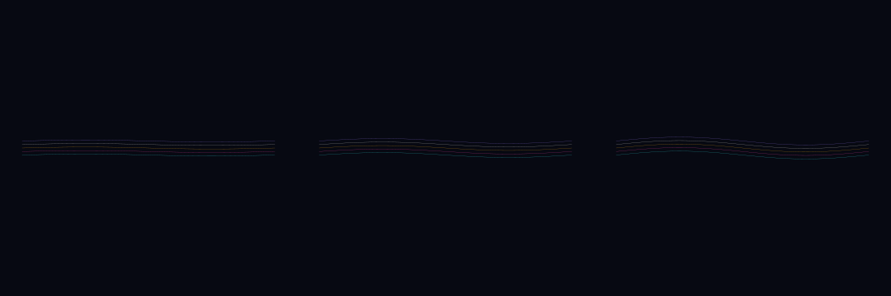
Multicolor line — Phase variations
Parallel iris-style color lines. Phase varies while scale stays fixed. Combined as a 1x3 grid of three variations.
-
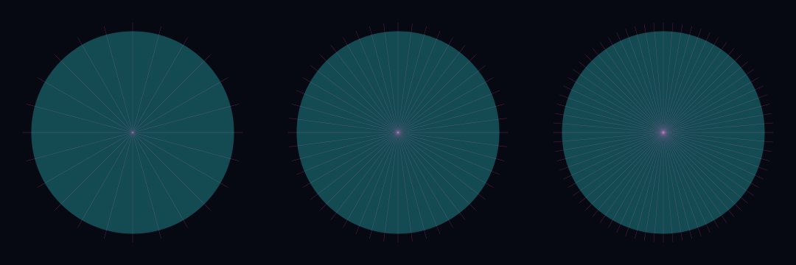
Flinque — Symmetry variations
Radial engine-turning under a translucent tint. Symmetry varies while density stays fixed. Combined as a 1x3 grid of three variations.
-
Flinque — Density variations
Radial engine-turning under a translucent tint. Density varies while symmetry stays fixed. Combined as a 1x3 grid of three variations.
-
Flinque — Scale variations
Radial engine-turning under a translucent tint. Scale varies while phase stays fixed. Combined as a 1x3 grid of three variations.
-
Flinque — Phase variations
Radial engine-turning under a translucent tint. Phase varies while scale stays fixed. Combined as a 1x3 grid of three variations.
-
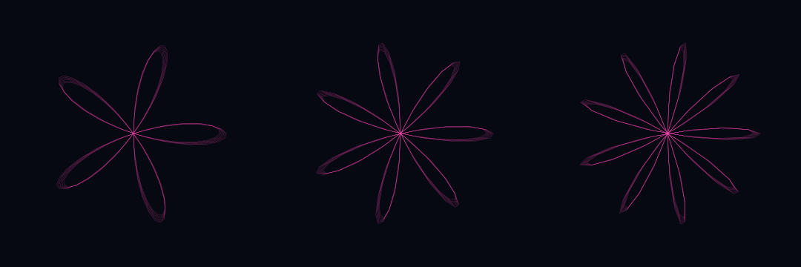
Rosette control — Symmetry variations
Existing rose-orbit vocabulary control. Symmetry varies while density stays fixed. Combined as a 1x3 grid of three variations.
-
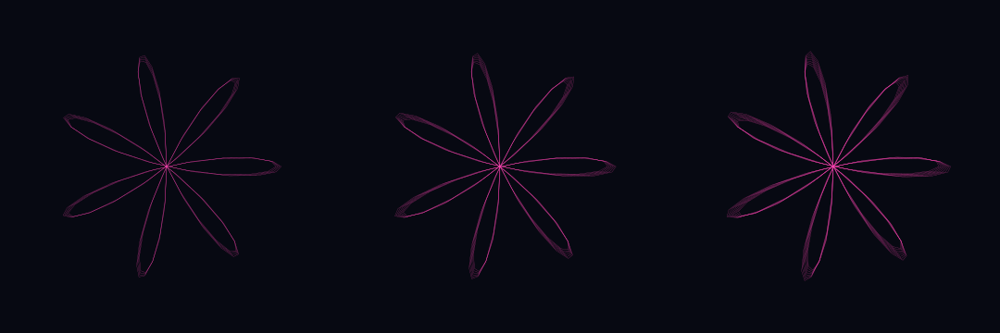
Rosette control — Density variations
Existing rose-orbit vocabulary control. Density varies while symmetry stays fixed. Combined as a 1x3 grid of three variations.
-
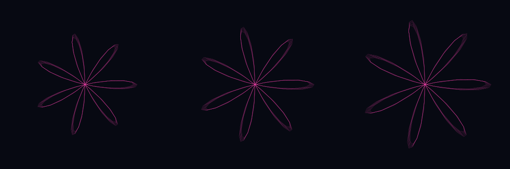
Rosette control — Scale variations
Existing rose-orbit vocabulary control. Scale varies while phase stays fixed. Combined as a 1x3 grid of three variations.
-
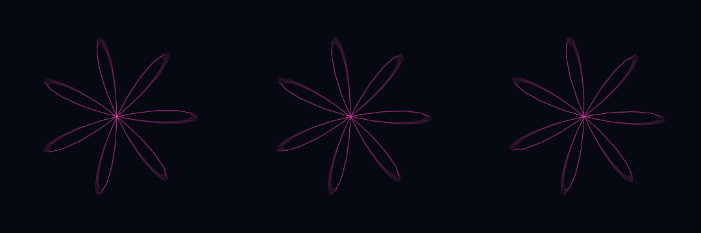
Rosette control — Phase variations
Existing rose-orbit vocabulary control. Phase varies while scale stays fixed. Combined as a 1x3 grid of three variations.